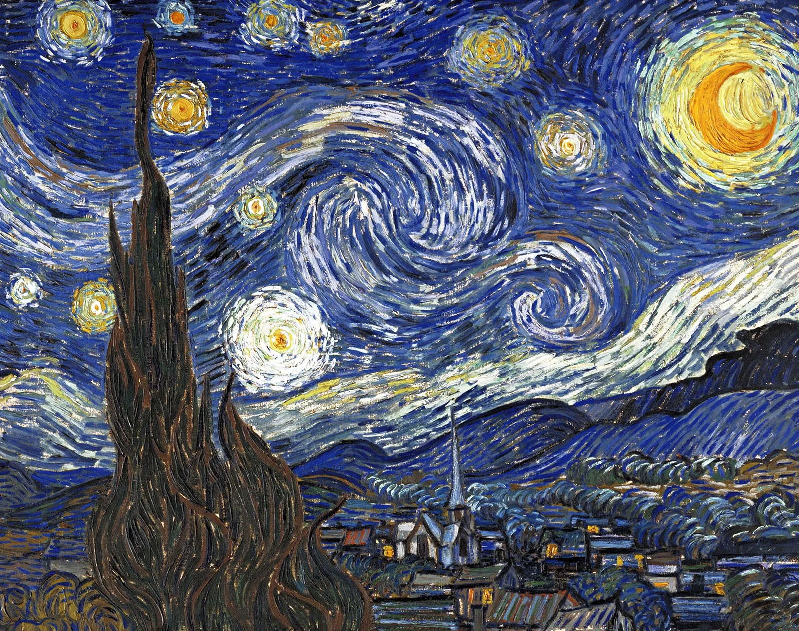
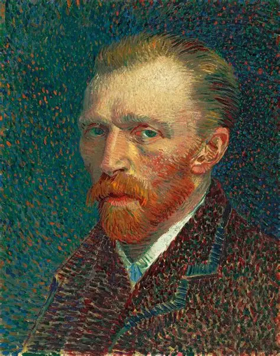

The Celestial Canvas
A masterpiece of Post-Impressionism, the sky is filled with swirling blue patterns, a glowing crescent moon, and eleven bright stars. Painted in 1889 during his stay at the asylum in Saint-Rémy-de-Provence.

Vincent van Gogh
It reflects his inner turmoil and his deep, spiritual longing for connection with nature through intense colors and dynamic composition.